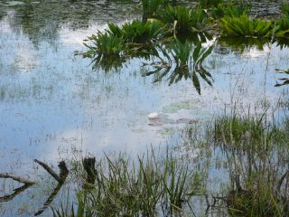
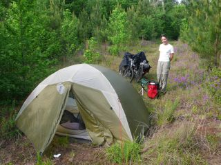
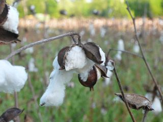
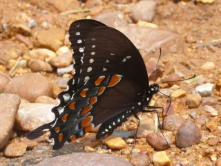
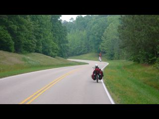
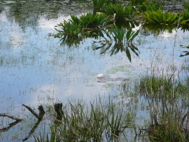
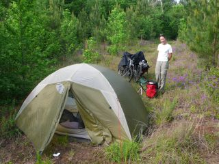
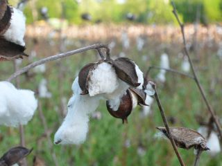
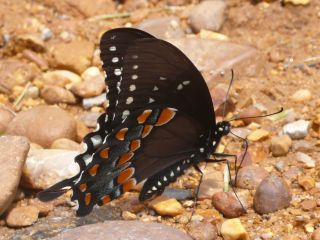
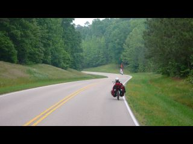

The Deep South
Tuesday, June 9, 2009 5:28:26 PM
Si je vous dis Mississippi, vous pensez à quoi ? Au riz long blanc de chez Carrefour qui rassasie les étudiants, à un grand fleuve avec des bateaux à roue à aube et à Tom Sawyer ? Pas mal.
Et si je vous dit Alabama ? Vous êtes cuits ? Comme nous il y a quelques temps. Aucune idée de ce à quoi peut bien ressembler l'Alabama.
Mais maintenant, on sait. Tout au Sud, il y a la côte, avec quelques jolies plages de sable blanc très fin qui crisse sous les pieds. Au large on observe quelques plateformes pétrolières qui sont apparemment progressivement fermées.

Puis en remontant vers le Nord, on trouve le delta de fleuves dont le Mississippi. Ce sont des marécages pleins d'aligators (utiles pour faire des sandwichs et des sacs a main mais pas très accueillants pour les cyclistes). Le terrain est donc très plat, presque trop... L'air y est humide et il fait dans les 30-35 degrés, ce qui fatigue un peu quand on pédale. L'odeur de chèvrefeuille domine, car celui-ci pousse partout, un peu comme le lierre en France.

Les routes sont bordées de plantations de pin, et l'industrie du bois est manifestement l'une des plus grosses ressources de la région. Et comme en Nouvelle-Zelande, ils pratiquent ici la coupe franche, c'est-à-dire que quand ils coupent, ils coupent tout et laissent un terrain vague. De gros camions (qui ne ralentissent pas en nous dépassant) emmenent les troncs vers les scieries et les usines de papier. Car apparemment, les propriétaires d'arbres sont souvent tentés de vendre les troncs avant qu'ils ne soient suffisamment gros pour servir en construction. Ils servent alors à faire du papier.

Quand ce ne sont pas des marécages ou des plantations de pin, on observe soit des champs de coton, soit des maisons entourées de leur grand jardin, qui se composent - comme presque partout aux Etats-Unis - d'une gigantesque pelouse, d'un monsieur sur son tracteur qui tond ladite pelouse, et souvent de magnolias. Le magnolia est d'ailleurs la fleur officielle de l'état du Mississippi.

Que peut-on voir d'autre ? Beaucoup d'animaux. Des serpents, de beaux oiseaux très colorés, des chenilles qui courent sur le bitume, des myriades de jolis papillons et des tortues... Les marécages grouillent de partout. Les serpents nagent dans les rivières à l'eau marronatre, et il paraît que les aligators remontent parfois jusqu'au Tennessee, nous avons donc attendu de meilleurs auspices pour faire trempette.
Les maisons qui se trouvent au centre des grandes pelouses sont majoritairement de 2 types : de jolies maisons blanches d'une part, de style colonial, avec une terrasse abritée entourée d'une balustrade et de fines colonnes et peuplée d'une ou 2 balancelles et de plusieurs rocking chairs. Et des maisons préfabriquées d'autre part. Nous avons remarqué en demandant de l'eau indifféremment aux habitants que les blancs habitent généralement les jolies maisons blanches tandis que les Noirs sont dans les maisons préfabriquées.
Quant aux habitants, ils nous ont beaucoup surpris. D'abord par leur fascination pour la France. Les Américains, intrigués par nos vélos, nous demandent d'où nous venons. Et quand nous répondons "de France", leur visage se teinte d'étonnement ou d'admiration. Les premiers nous demandent pourquoi diable nous sommes venus au fin fond de l'Alabama, les seconds nous demandent d'où en France nous provenons et nous racontent quand et comment ils ont passé 2 jours à Paris ou à Amsterdam il y a 10 ans. Ceux qui ont passé le plus de temps en Europe sont en général d'anciens militaires qui y ont été envoyés à la fin de la 2e guerre, et ils étaient soit en Allemagne, soit en Italie, auquel cas ils évoquent la gastronomie italienne en retenant une petite larme.
Mauvais point, les habitants du Sud des Etats-Unis que nous avons rencontrés nous ont étonnés par leur gentil racisme. Une vieille dame nous a dit : "oh les noirs, on a beau essayer de leur expliquer, rien n'y fait. Ce n'est pas qu'ils soient méchants, c'est juste qu'ils n'ont pas le cerveau pour comprendre."
Nous demandons à quelqu'un pourquoi il y a plusieurs stations essences abandonnées à Aliceville, il nous répond qu'il y en avait trop pour la ville. Et puis de toute façon, la station Shell était gérée par des Noirs, et qu'ils ne savent pas gérer un business et finissent toujours par faire faillite. Décidement, la ségrégation n'est pas si lointaine. Bizzarement, ici Obama n'est pas très populaire...
L'accent de certains habitants est par le moins surprenant. Parfois juste incomprehensible. Nous pensions parler mieux Anglais qu'Espagnol, mais il était parfois aussi dur de communiquer ici qu'au Chili ! Notre "red neck" reste à perfectionner.
En revanche, tous les Americains que nous rencontrons - ou presque- sont gentils et généreux avec nous. On ne nous a jamais dit non pour remplir de l'eau ou planter la tente pour la nuit. Beaucoup de gens nous offrent des boissons fraiches sans qu'on leur ait rien demandé. On nous a même donné de l'argent, et encore le monsieur s'est excusé de ne pas avoir plus que 7$ sur lui, alors qu'on lui avait déjà pris 20L d'eau.

Nous avons aussi été surpris par leur étonnement, voire leur incomprehension en ce qui concerne le cyclotourisme. Ils veulent tous nous faire acheter un véhicule motorisé ! L'argument en faveur du vélo qu'ils admettent c'est que c'est moins cher en fuel. Les motards comprennent mieux qu'on puisse se déplacer pour le plaisir et pas seulement de façon utilitaire. Mais ils nous disent tous en rigolant qu'à notre place, ils rajouteraient un moteur. Leur réplique culte : " Je pourrais même pas aller jusqu'à l'Église en vélo ! ".

Puisqu'on en parle, une dernière chose qui nous a marquée : le nombre d'églises. Dans un petit village de quelques centaines d'habitants, il y a jusqu'à 4/5 églises. La plupart sont des églises baptistes, une branche du protestantisme. Cette région est aussi connue sous le nom de "Bible belt", nous a-t-on dit plus au Nord. Du coup, beaucoup de contés sont "dry", c'est à dire que la vente d'alcool y est interdite. Il paraît qu'il y a pourtant plus d'accidents de la route dus a l'alcool dans les contés "dry" que dans les contés "wet", les gens devant se déplacer en voiture pour boire. Certains contés sont "damp" ou "moist" (humide), et l'alcool n'est alors accessible que dans les restaurants.
A posteriori, nous avons beaucoup apprécié de découvrir cette région méconnue des Etats-Unis. Sur le moment, ça a parfois été un peu dur. Il faut dire que nous nous sommes pris une grosse série d'orages, et pas juste des petits orages à la française, mais des vrais grosses tempêtes avec des branches qui tombent, des lignes électriques coupées, les chaussures qui flottent devant la tente au réveil et tout et tout.
Mais le Deep South vaut définitivement le coup d'y faire un tour.
Et si je vous dit Alabama ? Vous êtes cuits ? Comme nous il y a quelques temps. Aucune idée de ce à quoi peut bien ressembler l'Alabama.
Mais maintenant, on sait. Tout au Sud, il y a la côte, avec quelques jolies plages de sable blanc très fin qui crisse sous les pieds. Au large on observe quelques plateformes pétrolières qui sont apparemment progressivement fermées.

Puis en remontant vers le Nord, on trouve le delta de fleuves dont le Mississippi. Ce sont des marécages pleins d'aligators (utiles pour faire des sandwichs et des sacs a main mais pas très accueillants pour les cyclistes). Le terrain est donc très plat, presque trop... L'air y est humide et il fait dans les 30-35 degrés, ce qui fatigue un peu quand on pédale. L'odeur de chèvrefeuille domine, car celui-ci pousse partout, un peu comme le lierre en France.

Les routes sont bordées de plantations de pin, et l'industrie du bois est manifestement l'une des plus grosses ressources de la région. Et comme en Nouvelle-Zelande, ils pratiquent ici la coupe franche, c'est-à-dire que quand ils coupent, ils coupent tout et laissent un terrain vague. De gros camions (qui ne ralentissent pas en nous dépassant) emmenent les troncs vers les scieries et les usines de papier. Car apparemment, les propriétaires d'arbres sont souvent tentés de vendre les troncs avant qu'ils ne soient suffisamment gros pour servir en construction. Ils servent alors à faire du papier.

Quand ce ne sont pas des marécages ou des plantations de pin, on observe soit des champs de coton, soit des maisons entourées de leur grand jardin, qui se composent - comme presque partout aux Etats-Unis - d'une gigantesque pelouse, d'un monsieur sur son tracteur qui tond ladite pelouse, et souvent de magnolias. Le magnolia est d'ailleurs la fleur officielle de l'état du Mississippi.

Que peut-on voir d'autre ? Beaucoup d'animaux. Des serpents, de beaux oiseaux très colorés, des chenilles qui courent sur le bitume, des myriades de jolis papillons et des tortues... Les marécages grouillent de partout. Les serpents nagent dans les rivières à l'eau marronatre, et il paraît que les aligators remontent parfois jusqu'au Tennessee, nous avons donc attendu de meilleurs auspices pour faire trempette.
Les maisons qui se trouvent au centre des grandes pelouses sont majoritairement de 2 types : de jolies maisons blanches d'une part, de style colonial, avec une terrasse abritée entourée d'une balustrade et de fines colonnes et peuplée d'une ou 2 balancelles et de plusieurs rocking chairs. Et des maisons préfabriquées d'autre part. Nous avons remarqué en demandant de l'eau indifféremment aux habitants que les blancs habitent généralement les jolies maisons blanches tandis que les Noirs sont dans les maisons préfabriquées.
Quant aux habitants, ils nous ont beaucoup surpris. D'abord par leur fascination pour la France. Les Américains, intrigués par nos vélos, nous demandent d'où nous venons. Et quand nous répondons "de France", leur visage se teinte d'étonnement ou d'admiration. Les premiers nous demandent pourquoi diable nous sommes venus au fin fond de l'Alabama, les seconds nous demandent d'où en France nous provenons et nous racontent quand et comment ils ont passé 2 jours à Paris ou à Amsterdam il y a 10 ans. Ceux qui ont passé le plus de temps en Europe sont en général d'anciens militaires qui y ont été envoyés à la fin de la 2e guerre, et ils étaient soit en Allemagne, soit en Italie, auquel cas ils évoquent la gastronomie italienne en retenant une petite larme.
Mauvais point, les habitants du Sud des Etats-Unis que nous avons rencontrés nous ont étonnés par leur gentil racisme. Une vieille dame nous a dit : "oh les noirs, on a beau essayer de leur expliquer, rien n'y fait. Ce n'est pas qu'ils soient méchants, c'est juste qu'ils n'ont pas le cerveau pour comprendre."
Nous demandons à quelqu'un pourquoi il y a plusieurs stations essences abandonnées à Aliceville, il nous répond qu'il y en avait trop pour la ville. Et puis de toute façon, la station Shell était gérée par des Noirs, et qu'ils ne savent pas gérer un business et finissent toujours par faire faillite. Décidement, la ségrégation n'est pas si lointaine. Bizzarement, ici Obama n'est pas très populaire...
L'accent de certains habitants est par le moins surprenant. Parfois juste incomprehensible. Nous pensions parler mieux Anglais qu'Espagnol, mais il était parfois aussi dur de communiquer ici qu'au Chili ! Notre "red neck" reste à perfectionner.
En revanche, tous les Americains que nous rencontrons - ou presque- sont gentils et généreux avec nous. On ne nous a jamais dit non pour remplir de l'eau ou planter la tente pour la nuit. Beaucoup de gens nous offrent des boissons fraiches sans qu'on leur ait rien demandé. On nous a même donné de l'argent, et encore le monsieur s'est excusé de ne pas avoir plus que 7$ sur lui, alors qu'on lui avait déjà pris 20L d'eau.

Nous avons aussi été surpris par leur étonnement, voire leur incomprehension en ce qui concerne le cyclotourisme. Ils veulent tous nous faire acheter un véhicule motorisé ! L'argument en faveur du vélo qu'ils admettent c'est que c'est moins cher en fuel. Les motards comprennent mieux qu'on puisse se déplacer pour le plaisir et pas seulement de façon utilitaire. Mais ils nous disent tous en rigolant qu'à notre place, ils rajouteraient un moteur. Leur réplique culte : " Je pourrais même pas aller jusqu'à l'Église en vélo ! ".
Puisqu'on en parle, une dernière chose qui nous a marquée : le nombre d'églises. Dans un petit village de quelques centaines d'habitants, il y a jusqu'à 4/5 églises. La plupart sont des églises baptistes, une branche du protestantisme. Cette région est aussi connue sous le nom de "Bible belt", nous a-t-on dit plus au Nord. Du coup, beaucoup de contés sont "dry", c'est à dire que la vente d'alcool y est interdite. Il paraît qu'il y a pourtant plus d'accidents de la route dus a l'alcool dans les contés "dry" que dans les contés "wet", les gens devant se déplacer en voiture pour boire. Certains contés sont "damp" ou "moist" (humide), et l'alcool n'est alors accessible que dans les restaurants.
A posteriori, nous avons beaucoup apprécié de découvrir cette région méconnue des Etats-Unis. Sur le moment, ça a parfois été un peu dur. Il faut dire que nous nous sommes pris une grosse série d'orages, et pas juste des petits orages à la française, mais des vrais grosses tempêtes avec des branches qui tombent, des lignes électriques coupées, les chaussures qui flottent devant la tente au réveil et tout et tout.
Mais le Deep South vaut définitivement le coup d'y faire un tour.


Hélène FRON & Francis CHABOUISf6-ln # Thursday, June 11, 2009 3:07:47 PM
Huuuuuuu boubou. Plus viiiiiiiiiiiiiite.
Gros bisous,
moi aussi je préfèrerais faire du vélo plutôt que les exams.
Tiens au fait, si vous me croisez dans la rue, je fais 10 kg de plus maintenant, vous pouvez pas me rater.
JB